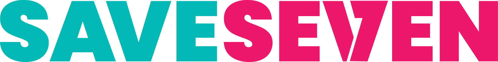

Wayfinder ticket #17 — Design student progress dashboard. Prototype only, not production code.
Open question this prototype is testing: how the dashboard sits "alongside" the existing Learn nav.
A — Dedicated "My Progress" tab
A new top-level nav item next to Learn, its own full page. Baseline trend as a line chart across all 4 Sitting slots (dashed where not yet taken). Treats progress as a first-class destination alongside the course itself.

Learn
My Progress
Community
TM
My Progress
Thandiwe M. · Student since Aug 2026
Current Level
Intermediate
2 of 4 Stages complete
Certificates earned
1 / 3
Beginner ✓
Improvement so far
+6 pts
6/20 → 12/20 (Sitting 1 → 2)
Baseline Assessment score over time
Same 20-question Baseline retaken after each Level. Sittings 3–4 not yet taken.
No new nav item. A compact "Your Progress" strip sits above the existing Level list on the Learn home page — rings + sparkline, expanding in place. Treats progress as context for continuing the course, not a separate destination.
Learn
Community
TM
Learn
Continue where you left off
Your Progress
100%
Beginner
50%
Intermediate
0%
Advanced
View full progress ▾
✓Beginner — Certificate earned
✓The Process
✓Consent
●SA Legal Framework
Ethics of Donation
Advanced not started
Baseline: 6/20 → 12/20 so far
Intermediate · SA Legal Framework
Stage 3 of 4 — in progress
Advanced Level
Locked until Intermediate is complete
C — Slide-out drawer from a nav badge
Learn nav is untouched apart from a small progress-ring badge. Clicking it slides in a drawer over the page — before/after score bars instead of a trend line, a compact Stage checklist, and a certificates strip. Treats progress as a quick-glance overlay.
Learn
Community
TM
Learn
Nav is unchanged — click the ring badge above to open your progress.